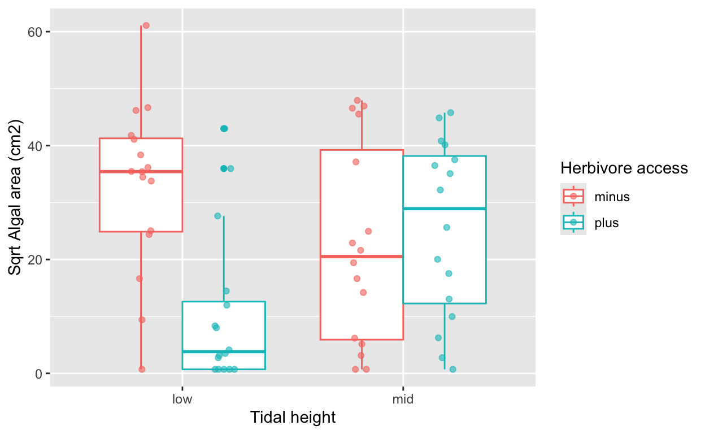
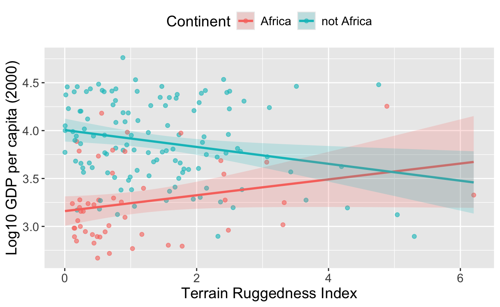

Introduction
On this web page you will find the homework, practical exercises and weekly quiz for Unit 5 of BIO144.
All other information for the course is on the OLAT course webpages, and web pages linked to from there: OLAT BIO144 Info. Hub
Homework
All homework is for your own practice and learning. It will not be marked or graded.
Homework common to all weeks
Review the material from the lecture(s) this week. Make sure you understand the concepts and ideas presented. Ensure you can follow any mathematical or statistical explanations. Ensure you can do the R that is needed for the week’s learning objectives.
When you find things you don’t understand or have trouble doing (e.g., in R), make a note of these. You can then ask a teaching assistant (TA) for help during the practical session, and you can ask on the Discussion Forum on OLAT. You can also ask questions during the lectures.
Reading
Remember, all this is optional, for your own learning and practice. You do not have to do any of this reading if you don’t want to.
- Two-way analysis of variance, example of cow growth and their diets – Section 6.1 & 6.2 from Getting Started with R, Beckerman, Childs & Petchey.
- One-way and two-way analysis of variance, example with plant biomass, fertilizer, and light, Chapter 6 of The New Statistics with R, Hector. (You’ll see some use of the qplot function here; some people think this is a quick way of making ggplots. Prof. Petchey doesn’t.)
- Read about ANCOVA in section 6.3 of Getting Started with R, by Beckerman, Childs, and Petchey.
- For an alternate perspective on ANCOVA, read chapter 7 of The New Statistics with R. This chapter includes Box 7.3 about something called orthogonality… which is a quite important difference between data coming from well designed experiments and data coming from elsewhere.
Videos about ANCOVA
In this series of videos, Prof. Petchey explains ANCOVA, and shows how to do it in R. He does this by showing first regression, then ANOVA, then ANCOVA, all with one dataset. The videos were made a while back, so some details of the content does not fit perfectly with the current content and structure of the course. But the statistics don’t change!
The first video introduces the case study and dataset, and then performs simple linear regression.
The second video performs a one-way ANOVA, including how to interpret the beta coefficients.
The third video concerns ANCOVA. Finally!
Don’t forget dogs!
A few weeks ago we played with a graph of cats. We should also not forget dogs! If you have some spare time, see if you can get the following code to run!
Practical part 1
In this exercise, you will work through two-way analysis of variance.
The steps to follow are:
- Get introduced to and think about the biological question.
- Prepare a script, load the data, and make some basic checks on the dataset.
- Visualise to answer the question.
- Fit an appropriate model. treatments.
- Check the assumptions of the model.
- Interpret the model.
- Make a visualisation of the data, good for publication.
- Write a short reporting sentence describing your findings.
- Critique and reflection
0. The biological question
The seashore is a lovely place, though in Zurich we’re not best placed to often enjoy one. Fortunately we have the lake. But I digress. One of the great things about some seashores is the animal and plants that live there, especially in the intertidal, the area between low and high tide where environmental conditions vary enormously over short distances and short timescales. In the intertidal, interactions among organisms can be quite important. The study you’re going to work on in this practical exercise is about herbivory by organisms such as limpets, and how this might vary across the intertidal, from low in the intertidal to higher up. The example comes from the book The Analysis of Biological Data by Whitlock and Schluter, and was originally made and published by Harley, C. D. G. 2003. Ecology 84: 1477-1488.
The question is: does the effect of herbivory on algal area depend on height in the intertidal?
In the experiment, 32 plots were cleared of algae just below low tide, these plots were therefore always underwater. Another 32 plots were in the intertidal. A small amount of transplanted algae was glued in the middle of each plot. 16 randomly chosen plots below low tide were fenced, to exclude herbivores. The same was done for 16 plots in the intertidal. The remaining plots were accessible to herbivores. The area of algae remaining after a certain time was measured.
Another way to describe the design of the experiment is: a two-way fully factorial experiment with treatments height (low or high) and herbivory (minus or plus). There were 16 replicates per treatment combination (i.e., 16 plots low height with herbivores, 16 plots low height without herbivores, 16 plots high height with herbivores, and 16 plots high height without herbivores). Therefore, there were 64 plots in total.
Now let’s think about degrees of freedom in this design. There are 64 observations.
Great, so we know how many degrees of freedom for error to expect. We can also make some expectations about what the ANOVA table will look like when we fit the model.
Awesome, we know what to expect from the ANOVA table when we fit the model.
If you’re a bit uncertain about this, sketch out the ANOVA table on a piece of paper, and fill in the degrees of freedom you expect to see. And ask a TA to check your sketch and thinking.
1. Prepare a script, load the data, and make some basic checks on the dataset.
You’ve done this before a few times now. Go for it! The dataset
intertidalalgae.csv is in the usual place.
The experimental design is known as “balanced” because there were equal number of replicates (16) per treatment combination. This is important to know, because in a balanced design, the statistical analysis is simpler and more robust.
However, even when the design is balanced, the outcome data may not be perfectly balanced (e.g., due to missing data). Therefore, it is always important to check the data after loading it. Do a “group_by” (with both explanatory variables) and “summarise” to check the number of data points per treatment combination.
Also check that the two treatments do each indeed contain only two
levels. Here is how to do this with the distinct
function.
intertidal %>%
distinct(height)And we need to check for NAs. A quick method is to again do a “group_by” and “summarise”, this time make it on a version of the dataset with na.omit() applied. This function removes any rows with NAs in any column.
Same result, so there are no NAs anywhere in the dataset. Note that if we had found fewer rows in the na.omit() version, we would need to investigate which rows and variables were missing data, and why. Depending on the situation, we might need to exclude some treatment combinations from the analysis if they had too few data points.
Have a look at the distribution of the response variable
Area_cm2 in each of the four treatment combinations. Your
friend here is facet_grid.
What do you think is going on here? Why might algal area be so low when herbivores are present at low tidal height? Discuss with your neighbour or a TA. And why might there be more algae in the other treatment combinations?
Whitlock and Schluter (in their book) transform the
Area_cm2 variable by taking the square root. This might
make sense so it becomes a linear measure, rather than a being a square.
On the other hand, it doesn’t really make the distributions much
better!
But in any case, go ahead and square root transform it. Use the square root for everything from now on. (Do make sure you do this, otherwise you could get wrong some of the following questions.)
2. Visualise the answer to the question
Now make a graph that will tell you the answer, about the effects of herbivores and height, and in particular if the effect of herbivores differs depending on height (i.e. is there an interaction?).
Use ggplot (of course) and map height to the x axis, and herbivores
to colour, and your transformed area variable to the y axis. The use
either geom_boxplot or geom_point (or both).
If you use geom_point, you might want to consider putting
this inside the brackets
position=position_jitterdodge(jitter.width = 0.2)
jitterdodge sounds a bit funny eh! It does just what it
says, jitter the points a bit, so they don’t lie on top of each other,
and dodges the treatments out of each other’s way. Compare the graph to
if this wasn’t in the geom_point brackets.

Look at the graph, imagine a line connecting the means of the two herbivore treatments at low height, and another line connecting the means of the two herbivore treatments at mid height. Are these lines parallel, or are they not parallel?
Look again. What is the effect of herbivores at low height? The answer is that there is a large effect of herbivores at low height, with much less algae when herbivores are present.
Now, what is the effect of herbivores at mid height? The answer is that there no clear effect of herbivores at mid height, with similar amounts of algae whether herbivores are present or not.
So we can pretty confidently say that the effect of herbivores depends on tidal height. This is an interaction. Given the strength of the pattern in the graph, we can be quite confident in our answer to the question, even without making and interpreting a statistical model.
And in the ANOVA table, we expect that the interaction term will have a large F value, and a small p value (less than 0.05).
Just for some practice, and less so for answering any biological
question, calculate the mean and the standard deviation of each of the
treatment combinations. Hint: use group_by, include both
the explanatory variables, and then use summarise.
3. Fit an appropriate statistical model
Now fit the linear model with two main effect and the interaction term.
4. Check the assumptions of model
Make the four plots we use to check if the model assumptions are reasonably well met by the data and our model.
Write a sentence describing your assessment of how well each of the five assumptions of a linear model are met. Check in with a TA for feedback on your assessment.
5. Interpret the model
Get the ANOVA table for the model.
The first thing to check, and this is really important, is the degrees of freedom for each of the terms in the ANOVA table. Do they match what you expected?
We can also see that, as expected, the ANOVA table contains rows for both main effects and their interaction. And that each of these terms has 1 degree of freedom, as we expected. Everything is good.
If we add up all the sums of squares, we get the total sum of squares. Here it is about 18’500. We can check this:
sum((intertidal$Area_sqrt - mean(intertidal$Area_sqrt))^2)## [1] 18488.63(Took me ages to get the brackets in the correct place there!)
Use the total sum of squares to calculate the UNadjusted R squared for the model.
Now look at the \(F\) values and \(p\) values. Do they match what you expected from looking at the graph?
We can see there is a statistically significant effect of herbivores, but as we have an interaction, this must be interpreted with caution. The effect of herbivores depends on tidal height. Looking at the graph, there really is no effect of herbivores at mid intertidal range. So it is pretty meaningless to say there is an overall effect of herbivores, even when the model detects this.
With such a clear pattern in the graph, and in the ANOVA table, we can be quite confident in saying that there is an interaction between tidal height and herbivory. And we can see what causes this in the data: a strong effect of herbivory at low tidal height, and no effect of herbivory at mid tidal height.
In this situation, I (Owen) do not find it necessary to do post-hoc tests to find out which treatments differ from which others. The graph and the ANOVA table already tell us this quite clearly.
If, however, we wanted to know if algal area was significantly different between mid and low height in the absence of herbivores, then we could do a post-hoc test for this specific comparison. But, be really careful here… we have “mission creep” – we specified a clear and important biological question at the start, and now we are moving on to another question. Reasons to avoid this include: increasing the risk of false positives, and the danger of “cherry picking” results that support a desired conclusion.
Another really important reason to avoid this, or at least be very careful, is that we can end up not finishing our projects because we keep adding more and more questions! This is one of the most important reasons for having a clear, well researched, and well justified research question at the start of a project. Because the end of the project is then already clearly defined at the beginning of the project: the project ends when the question is answered. (Of course there will be follow on questions, but these go to the next project.)
6. Make a visualisation of the data, good for publication
Make a publication quality figure. Build it up step by step. Check each new feature or adjustment works before making another. Work towards a figure that meets the following criteria. The criteria are intentionally “high-level”, so you will have to think about what they mean in practice. This also gives you freedom to be creative in how you meet the criteria.
- Is in a style that matches the intended publication (e.g., academic journal, or popular science magazine). (You choose the publication style.)
- Clearly and directly addresses the research question.
- Is interpretable on its own.
- Shows the data honestly.
- Make uncertainty visible.
- Is visually clear and readable.
- Is reproducible.
When you’re done, or if you want feedback along the way, check in with a TA, or with a neighbour. See what wonderful figures they produced.
(Only if you really really have nothing better to do, here is a fun challenge for you. Create a figure that would be suitable for inclusion in a cyberpunk-style science magazine (think neon lights, high contrast, futuristic vibes) while still being scientifically honest and interpretable. If you do this, and are happy to share, please email your figure to Owen so he can show it in a lecture! If you want to choose another style, please go ahead, and please also share to Owen!)
7. Write reporting sentence(s).
Write a few sentences reporting the results of your analysis. The sentences should include:
- A brief description of the analysis performed.
- A brief interpretation of the results in relation to the biological question.
- The key statistics.
When you’re done, check in with a TA and or neighbour for feedback on your reporting.
8. Critique and reflection
Reflect on your analysis and reporting, and your learning. What went well? What could be improved? Discuss with a neighbour or a TA.
What could be done better in the experiment? Discuss with a neighbour or a TA.
One place where we could have improved the study is to have made a hypothesis and prediction before doing the experiment. We may have thought the following:
- Hypothesis: in the mid intertidal the herbivores are not active and perhaps even not present, due to the very variable environmental conditions (e.g., exposure to air, temperature fluctuations). Therefore, herbivory will have little effect on algal area at mid tidal height. Whereas in the low intertidal, herbivores are active and abundant, and will therefore strongly reduce algal area when present.
- Prediction: we expect to find an interaction between tidal height and herbivory, with a strong effect of herbivory at low tidal height, and little or no effect of herbivory at mid tidal height.
(PLEASE NOTE: in reality we MUST NOT make up the hypothesis and prediction after seeing the data! This is just an example of what could have been done before the experiment was performed.)
Practical part 2
In this practical part, you will work through an analysis of covariance. Please use this structure for your work on this exercise:
- Get introduced to and think about the biological question.
- Prepare a script, load the data, and make some basic checks on the dataset.
- Visualise to answer the question.
- Fit an appropriate model. treatments.
- Check the assumptions of the model.
- Interpret the model.
- Make a visualisation of the data, good for publication.
- Write a short reporting sentence describing your findings.
- Critique and reflection
In this practical part, there is less guidance for you, and fewer questions. This is intentional. As you experience more, you become more capable to do what you already experienced, and more able and confident to tackle new things. As you get the hang of these, we increase our expectations of you! This is how learning works. Of course, reach out for support at any point!
(The dataset in this exercise, and some text (itallic below) comes from the excellent book Statistical Rethinking by Richard McElreath.)
“Africa is special. The second largest continent, it is the most culturally and genetically diverse. Africa has about 3 billon fewer people than Asia, but it has just as many living languages. Africa is so genetically diverse that most of the genetic variation outside Africa is just a subset of the variation within Africa. Africa is also geographically special, in a puzzling way: Bad geography tends to be related to bad economies outside of Africa, but African economies seem immune to bad geography.”
In this exercise, you will look at and analyse some data about the last statement, that Africa is immune to bad geography, whereas the rest of the world is not.
In the dataset rugged.csv, which you can find from the
usual place, each row is a country, and there are three variables of
interest to us:
rugged– this is the Terrain Ruggedness Index, that quantified the topographic heterogeneity of the landscape. E.g., Netherlands = low, Switzerland = high.rgdppc_2000– this is real gross domestic product per capita in year 2000. In his book McElreath puts forward a good argument for why one can already expect such a variable to be exponentially distributed, such that we will need to log transform it. His argument is based on growth being a multiplicative process.cont_africa– this is a binary variable (0s and 1s) with 0 if a country is not in Africa and 1 if it is.
Get the dataset, do all the preliminaries in R, including reading in the data.
Then:
Look at the distribution of the
rgdppc_2000variable – and then create a log10 transformed version of it.Create a new variable (name it
cont_africa1) in which a row contains “Africa” if the country is in Africa, and “not Africa” if it isn’t. We do this, as its easier and nicer to work with this information in the variable, rather than just 0 and 1s. (In general, in R, don’t use codes for things that can be represented by words. Use the meaningful words. This is a good thing to do, because then tables and graphs have those words, rather than cryptic codes, and will be easier for you and others to interpret. Hint: use the function ifelse inside mutate.)
Good, now you’re all set to work through the following questions…
Now make a version of the dataset with no observations with NAs in
any of the three variables of interest. You can use the
na.omit() function for this, after selecting the three
variables of interest. You should have a dataset with 170 rows.
Now make a log transformed version of the rgdppc_2000
variable. Use log base 10. And plot a graph that will tell you the
answer to the question… does the relationship between GDP and landscape
ruggedness differ between countries in Africa and those not in Africa.
Make a guess of if you think there is a statistically significant
difference.
Write one or two sentences about what you see in the graph. Is there a difference between Africa and not Africa? If so, what is the difference?
Fit an appropriate model to test if there is a statistically significant difference in the relationship between GDP and ruggedness between Africa and not Africa.
Check the assumptions of the model. Are they reasonably well met?
Interpret the model. Look at the ANOVA table. Check the degrees of freedom for each term. Do they match what you expected?
What does the ANOVA table tell you about the relationship between GDP and ruggedness in Africa versus not Africa? Is there a statistically significant difference? Is Africa special in this respect?
Yes, we see that the interaction term is statistically significant, indicating that the relationship between GDP and ruggedness differs between African countries and those not in Africa.
Now make a beautiful figure suitable for publication, that shows the relationship between GDP and ruggedness in Africa and not Africa. Make sure it meets the criteria we discussed earlier.
Perhaps this is appropriate:

Note that to be absolutely sure that the plotted model is the same as
the one you fitted, you should use the predict() function
to get predicted values from your model, and then plot these predicted
values rather than using geom_smooth().
Write a sentence or two about the pattern and the statistical support.
Critique and reflect.
Weekly Quiz
And here are some question not specific to models with interactions, but rather about linear models in general.